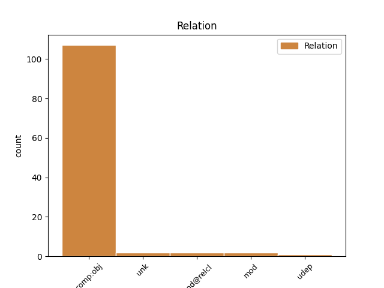
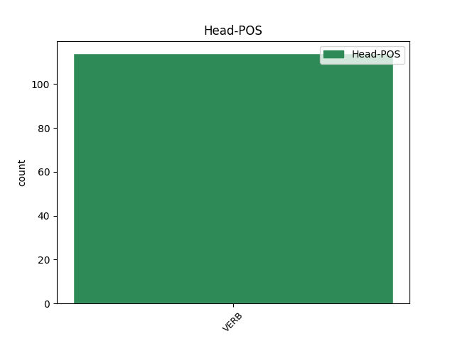
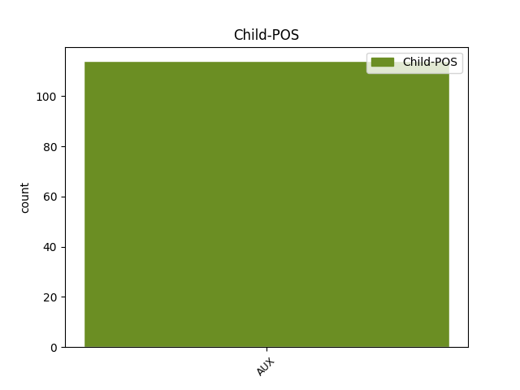

Distribution of features within this leaf



Agreement Rules sorted by frequency.
- When the dependent token is the direct object complements(comp:obj) of the head token, and the head token is VERB and the dependent token is AUX.
1 They _ _ _ _ 0 _ _ _
2 do _ _ _ _ 0 _ _ _
3 check _ _ _ _ 0 _ _ _
4 the _ _ _ _ 0 _ _ _
5 cart _ _ _ _ 0 _ _ _
6 as _ _ _ _ 0 _ _ _
7 you _ _ _ _ 0 _ _ _
8 leave leave VERB VBP Mood=Ind|Tense=Pres|VerbForm=Fin 0 _ _ _
9 so _ _ _ _ 0 _ _ _
10 do do AUX VBP Mood=Ind|Tense=Pres|VerbForm=Fin 8 comp:obj _ SpaceAfter=No
11 n't _ _ _ _ 0 _ _ _
12 try _ _ _ _ 0 _ _ _
13 to _ _ _ _ 0 _ _ _
14 sneak _ _ _ _ 0 _ _ _
15 anything _ _ _ _ 0 _ _ _
16 past _ _ _ _ 0 _ _ _
17 them _ _ _ _ 0 _ _ _
18 . _ _ _ _ 0 _ _ _
1 Those _ _ _ _ 0 _ _ _
2 who _ _ _ _ 0 _ _ _
3 've _ _ _ _ 0 _ _ _
4 never _ _ _ _ 0 _ _ _
5 heard _ _ _ _ 0 _ _ _
6 of _ _ _ _ 0 _ _ _
7 this _ _ _ _ 0 _ _ _
8 will _ _ _ _ 0 _ _ _
9 be _ _ _ _ 0 _ _ _
10 amazed _ _ _ _ 0 _ _ _
11 to _ _ _ _ 0 _ _ _
12 see _ _ _ _ 0 _ _ _
13 a _ _ _ _ 0 _ _ _
14 chicken _ _ _ _ 0 _ _ _
15 lie lie VERB VBP Mood=Ind|Tense=Pres|VerbForm=Fin 0 _ _ _
16 perfectly _ _ _ _ 0 _ _ _
17 still _ _ _ _ 0 _ _ _
18 after _ _ _ _ 0 _ _ _
19 these _ _ _ _ 0 _ _ _
20 instructions _ _ _ _ 0 _ _ _
21 are be AUX VBP Mood=Ind|Tense=Pres|VerbForm=Fin 15 mod _ _
22 followed _ _ _ _ 0 _ _ _
23 . _ _ _ _ 0 _ _ _
1 This _ _ _ _ 0 _ _ _
2 system _ _ _ _ 0 _ _ _
3 can _ _ _ _ 0 _ _ _
4 also _ _ _ _ 0 _ _ _
5 be _ _ _ _ 0 _ _ _
6 used _ _ _ _ 0 _ _ _
7 longitudinally _ _ _ _ 0 _ _ _
8 to _ _ _ _ 0 _ _ _
9 study _ _ _ _ 0 _ _ _
10 how _ _ _ _ 0 _ _ _
11 the _ _ _ _ 0 _ _ _
12 workforce _ _ _ _ 0 _ _ _
13 ’s _ _ _ _ 0 _ _ _
14 composition _ _ _ _ 0 _ _ _
15 changes change VERB VBZ Mood=Ind|Number=Sing|Person=3|Tense=Pres|VerbForm=Fin 0 _ _ _
16 over _ _ _ _ 0 _ _ _
17 time _ _ _ _ 0 _ _ _
18 , _ _ _ _ 0 _ _ _
19 which _ _ _ _ 0 _ _ _
20 is be AUX VBZ Mood=Ind|Number=Sing|Person=3|Tense=Pres|VerbForm=Fin 15 mod@relcl _ _
21 particularly _ _ _ _ 0 _ _ _
22 valuable _ _ _ _ 0 _ _ _
23 for _ _ _ _ 0 _ _ _
24 evaluating _ _ _ _ 0 _ _ _
25 the _ _ _ _ 0 _ _ _
26 effectiveness _ _ _ _ 0 _ _ _
27 of _ _ _ _ 0 _ _ _
28 policies _ _ _ _ 0 _ _ _
29 meant _ _ _ _ 0 _ _ _
30 to _ _ _ _ 0 _ _ _
31 broaden _ _ _ _ 0 _ _ _
32 participation _ _ _ _ 0 _ _ _
33 or _ _ _ _ 0 _ _ _
34 improve _ _ _ _ 0 _ _ _
35 retention _ _ _ _ 0 _ _ _
36 of _ _ _ _ 0 _ _ _
37 faculty _ _ _ _ 0 _ _ _
38 . _ _ _ _ 0 _ _ _
1 It _ _ _ _ 0 _ _ _
2 ’s _ _ _ _ 0 _ _ _
3 this _ _ _ _ 0 _ _ _
4 quiet _ _ _ _ 0 _ _ _
5 experience _ _ _ _ 0 _ _ _
6 where _ _ _ _ 0 _ _ _
7 you _ _ _ _ 0 _ _ _
8 are _ _ _ _ 0 _ _ _
9 trying _ _ _ _ 0 _ _ _
10 to _ _ _ _ 0 _ _ _
11 soak _ _ _ _ 0 _ _ _
12 in _ _ _ _ 0 _ _ _
13 what _ _ _ _ 0 _ _ _
14 the _ _ _ _ 0 _ _ _
15 joke _ _ _ _ 0 _ _ _
16 is be VERB VBZ Mood=Ind|Number=Sing|Person=3|Tense=Pres|VerbForm=Fin 0 _ _ _
17 , _ _ _ _ 0 _ _ _
18 have have AUX VBP Mood=Ind|Tense=Pres|VerbForm=Fin 16 unk _ _
19 we _ _ _ _ 0 _ _ _
20 done _ _ _ _ 0 _ _ _
21 anything _ _ _ _ 0 _ _ _
22 like _ _ _ _ 0 _ _ _
23 this _ _ _ _ 0 _ _ _
24 , _ _ _ _ 0 _ _ _
25 is _ _ _ _ 0 _ _ _
26 it _ _ _ _ 0 _ _ _
27 a _ _ _ _ 0 _ _ _
28 unique _ _ _ _ 0 _ _ _
29 take _ _ _ _ 0 _ _ _
30 , _ _ _ _ 0 _ _ _
31 what _ _ _ _ 0 _ _ _
32 are _ _ _ _ 0 _ _ _
33 other _ _ _ _ 0 _ _ _
34 people _ _ _ _ 0 _ _ _
35 doing _ _ _ _ 0 _ _ _
36 . _ _ _ _ 0 _ _ _
1 If _ _ _ _ 0 _ _ _
2 they _ _ _ _ 0 _ _ _
3 're _ _ _ _ 0 _ _ _
4 nice _ _ _ _ 0 _ _ _
5 to _ _ _ _ 0 _ _ _
6 your _ _ _ _ 0 _ _ _
7 face _ _ _ _ 0 _ _ _
8 , _ _ _ _ 0 _ _ _
9 but _ _ _ _ 0 _ _ _
10 talk talk VERB VBP Mood=Ind|Tense=Pres|VerbForm=Fin 0 _ _ _
11 bad _ _ _ _ 0 _ _ _
12 about _ _ _ _ 0 _ _ _
13 you _ _ _ _ 0 _ _ _
14 behind _ _ _ _ 0 _ _ _
15 your _ _ _ _ 0 _ _ _
16 back _ _ _ _ 0 _ _ _
17 like _ _ _ _ 0 _ _ _
18 it _ _ _ _ 0 _ _ _
19 's be AUX VBZ Mood=Ind|Number=Sing|Person=3|Tense=Pres|VerbForm=Fin 10 udep _ _
20 their _ _ _ _ 0 _ _ _
21 favourite _ _ _ _ 0 _ _ _
22 hobby _ _ _ _ 0 _ _ _
23 , _ _ _ _ 0 _ _ _
24 then _ _ _ _ 0 _ _ _
25 they _ _ _ _ 0 _ _ _
26 probably _ _ _ _ 0 _ _ _
27 have _ _ _ _ 0 _ _ _
28 a _ _ _ _ 0 _ _ _
29 problem _ _ _ _ 0 _ _ _
30 with _ _ _ _ 0 _ _ _
31 pride _ _ _ _ 0 _ _ _
32 . _ _ _ _ 0 _ _ _
Disagree Examples:
1 Galois _ _ _ _ 0 _ _ _
2 himself _ _ _ _ 0 _ _ _
3 famously _ _ _ _ 0 _ _ _
4 exclaimed exclaim VERB VBD Mood=Ind|Tense=Past|VerbForm=Fin 0 _ _ _
5 : _ _ _ _ 0 _ _ _
6 " _ _ _ _ 0 _ _ _
7 I _ _ _ _ 0 _ _ _
8 am be AUX VBP Mood=Ind|Number=Sing|Person=1|Tense=Pres|VerbForm=Fin 4 comp:obj _ _
9 the _ _ _ _ 0 _ _ _
10 victim _ _ _ _ 0 _ _ _
11 of _ _ _ _ 0 _ _ _
12 an _ _ _ _ 0 _ _ _
13 infamous _ _ _ _ 0 _ _ _
14 coquette _ _ _ _ 0 _ _ _
15 and _ _ _ _ 0 _ _ _
16 her _ _ _ _ 0 _ _ _
17 two _ _ _ _ 0 _ _ _
18 dupes _ _ _ _ 0 _ _ _
19 . _ _ _ _ 0 _ _ _
20 " _ _ _ _ 0 _ _ _
21 [ _ _ _ _ 0 _ _ _
22 12 _ _ _ _ 0 _ _ _
23 ] _ _ _ _ 0 _ _ _
1 Mathematician _ _ _ _ 0 _ _ _
2 Hermann _ _ _ _ 0 _ _ _
3 Weyl _ _ _ _ 0 _ _ _
4 said say VERB VBD Mood=Ind|Tense=Past|VerbForm=Fin 0 _ _ _
5 of _ _ _ _ 0 _ _ _
6 this _ _ _ _ 0 _ _ _
7 testament _ _ _ _ 0 _ _ _
8 , _ _ _ _ 0 _ _ _
9 " _ _ _ _ 0 _ _ _
10 This _ _ _ _ 0 _ _ _
11 letter _ _ _ _ 0 _ _ _
12 , _ _ _ _ 0 _ _ _
13 if _ _ _ _ 0 _ _ _
14 judged _ _ _ _ 0 _ _ _
15 by _ _ _ _ 0 _ _ _
16 the _ _ _ _ 0 _ _ _
17 novelty _ _ _ _ 0 _ _ _
18 and _ _ _ _ 0 _ _ _
19 profundity _ _ _ _ 0 _ _ _
20 of _ _ _ _ 0 _ _ _
21 ideas _ _ _ _ 0 _ _ _
22 it _ _ _ _ 0 _ _ _
23 contains _ _ _ _ 0 _ _ _
24 , _ _ _ _ 0 _ _ _
25 is be AUX VBZ Mood=Ind|Number=Sing|Person=3|Tense=Pres|VerbForm=Fin 4 comp:obj _ _
26 perhaps _ _ _ _ 0 _ _ _
27 the _ _ _ _ 0 _ _ _
28 most _ _ _ _ 0 _ _ _
29 substantial _ _ _ _ 0 _ _ _
30 piece _ _ _ _ 0 _ _ _
31 of _ _ _ _ 0 _ _ _
32 writing _ _ _ _ 0 _ _ _
33 in _ _ _ _ 0 _ _ _
34 the _ _ _ _ 0 _ _ _
35 whole _ _ _ _ 0 _ _ _
36 literature _ _ _ _ 0 _ _ _
37 of _ _ _ _ 0 _ _ _
38 mankind _ _ _ _ 0 _ _ _
39 . _ _ _ _ 0 _ _ _
40 " _ _ _ _ 0 _ _ _
1 “ _ _ _ _ 0 _ _ _
2 What _ _ _ _ 0 _ _ _
3 did do AUX VBD Mood=Ind|Tense=Past|VerbForm=Fin 10 comp:obj _ _
4 you _ _ _ _ 0 _ _ _
5 do _ _ _ _ 0 _ _ _
6 ? _ _ _ _ 0 _ _ _
7 ” _ _ _ _ 0 _ _ _
8 my _ _ _ _ 0 _ _ _
9 mom _ _ _ _ 0 _ _ _
10 says say VERB VBZ Mood=Ind|Number=Sing|Person=3|Tense=Pres|VerbForm=Fin 0 _ _ _
11 when _ _ _ _ 0 _ _ _
12 she _ _ _ _ 0 _ _ _
13 sees _ _ _ _ 0 _ _ _
14 us _ _ _ _ 0 _ _ _
15 . _ _ _ _ 0 _ _ _
1 “ _ _ _ _ 0 _ _ _
2 Is be AUX VBZ Mood=Ind|Number=Sing|Person=3|Tense=Pres|VerbForm=Fin 8 comp:obj _ _
3 it _ _ _ _ 0 _ _ _
4 him _ _ _ _ 0 _ _ _
5 ? _ _ _ _ 0 _ _ _
6 ” _ _ _ _ 0 _ _ _
7 we _ _ _ _ 0 _ _ _
8 asked ask VERB VBD Mood=Ind|Tense=Past|VerbForm=Fin 0 _ _ _
9 each _ _ _ _ 0 _ _ _
10 other _ _ _ _ 0 _ _ _
11 , _ _ _ _ 0 _ _ _
12 nudging _ _ _ _ 0 _ _ _
13 elbows _ _ _ _ 0 _ _ _
14 and _ _ _ _ 0 _ _ _
15 climbing _ _ _ _ 0 _ _ _
16 onto _ _ _ _ 0 _ _ _
17 the _ _ _ _ 0 _ _ _
18 chairs _ _ _ _ 0 _ _ _
19 . _ _ _ _ 0 _ _ _
1 The _ _ _ _ 0 _ _ _
2 waters _ _ _ _ 0 _ _ _
3 broke _ _ _ _ 0 _ _ _
4 making _ _ _ _ 0 _ _ _
5 way _ _ _ _ 0 _ _ _
6 for _ _ _ _ 0 _ _ _
7 the _ _ _ _ 0 _ _ _
8 gnarled _ _ _ _ 0 _ _ _
9 head _ _ _ _ 0 _ _ _
10 of _ _ _ _ 0 _ _ _
11 a _ _ _ _ 0 _ _ _
12 whale _ _ _ _ 0 _ _ _
13 , _ _ _ _ 0 _ _ _
14 spouting _ _ _ _ 0 _ _ _
15 water _ _ _ _ 0 _ _ _
16 high _ _ _ _ 0 _ _ _
17 against _ _ _ _ 0 _ _ _
18 the _ _ _ _ 0 _ _ _
19 clouds _ _ _ _ 0 _ _ _
20 before _ _ _ _ 0 _ _ _
21 opening _ _ _ _ 0 _ _ _
22 its _ _ _ _ 0 _ _ _
23 whiskered _ _ _ _ 0 _ _ _
24 maw _ _ _ _ 0 _ _ _
25 and _ _ _ _ 0 _ _ _
26 in _ _ _ _ 0 _ _ _
27 a _ _ _ _ 0 _ _ _
28 looming _ _ _ _ 0 _ _ _
29 , _ _ _ _ 0 _ _ _
30 booming _ _ _ _ 0 _ _ _
31 voice _ _ _ _ 0 _ _ _
32 called call VERB VBD Mood=Ind|Tense=Past|VerbForm=Fin 0 _ _ _
33 : _ _ _ _ 0 _ _ _
34 He _ _ _ _ 0 _ _ _
35 is be AUX VBZ Mood=Ind|Number=Sing|Person=3|Tense=Pres|VerbForm=Fin 32 comp:obj _ _
36 coming _ _ _ _ 0 _ _ _
37 , _ _ _ _ 0 _ _ _
38 He _ _ _ _ 0 _ _ _
39 is _ _ _ _ 0 _ _ _
40 coming _ _ _ _ 0 _ _ _
41 . _ _ _ _ 0 _ _ _